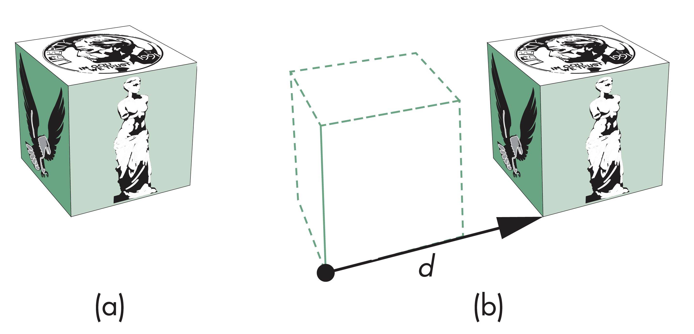
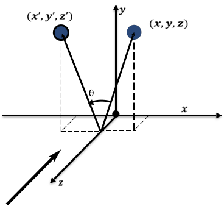
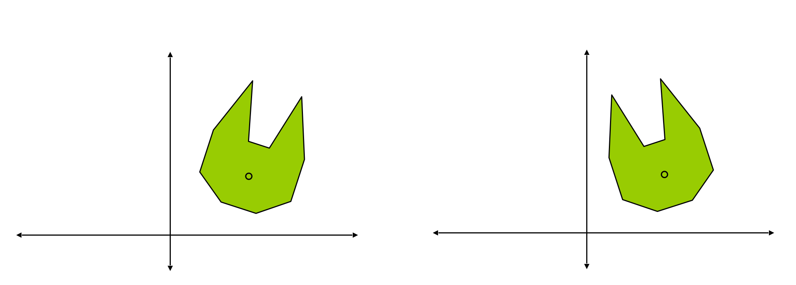

计算机图形学
第四章 几何和变换
变换
变换
一般变换
变换，指的是建立点与点之间，或向量与向量之间的映射。如下图中所示，有映射关系$v=T(u)$, $Q=T(P)$
变换
仿射变换
仿射变换，能够维持线性属性，其中包含了物理上重要的变换，如刚体变换(Rigid-body transformation)：旋转(Rotation)、平移(Translation)，以及非刚性变换(Non-rigid body transformation)，如缩放(Scaling)、错切(Shear)变换
在图形学中，仿射变换是非常重要的，这是因为绘制线段时，可以通过变换线段的顶点，然后通过连接顶点绘制相应变换后的线段
变换
仿射变换流水线实现
变换
平移
平移，即将点从一个位置$P$移动到一个新的位置$P'$，位移向量为$d$
平移具有三个自由度，用公式可表示为$P'=P+d$
变换
平移的齐次坐标表示
用齐次坐标分别表示点和向量，有 $$ \begin{aligned} P=\begin{bmatrix}x & y & z & 1\end{bmatrix}^T\\ P'=\begin{bmatrix}x' & y' & z' & 1\end{bmatrix}^T\\ d=\begin{bmatrix}d_x & d_y & d_z & 0\end{bmatrix}^T \end{aligned}$$ 则有$P'=P+d$，即 $$x'=x+d_x, y'=y+d_y, z'=z+d_z$$
变换
平移的矩阵实现
若用矩阵表示平移变换，有$p=TP$，其中，$T$定义为变换矩阵，有 $$ T=T(d_x,d_y,d_z)=\begin{bmatrix} 1 & 0 & 0 & d_x\\ 0 & 1 & 0 & d_y\\ 0 & 0 & 1 & d_z\\ 0 & 0 & 0 & 1\\ \end{bmatrix}$$
变换
旋转(2D)
在二维平面的旋转，考虑绕原点逆时针旋转$\theta$角度
$$\begin{cases} x'=r\cos(\phi+\theta)\\ y'=r\sin(\phi+\theta) \end{cases}$$ $$\begin{cases} x=r\cos(\phi)\\ y=r\sin(\phi) \end{cases} 可得 $$\begin{cases} x'=x\cos(\theta)-y\sin(\theta)\\ y'=x\sin(\theta)+y\cos(\theta)\\ \end{cases}
变换
绕Z轴旋转
在三维空间绕$Z$轴旋转，保持点的$Z$坐标保持不变
变换
绕Z轴旋转齐次坐标矩阵表示
在三维空间绕Z轴旋转可视作在XOY平面绕原点旋转在三维空间的扩展，有 $$ \begin{cases} x'=x\cos{\theta}-y\sin{\theta}\\ y'=x\sin{\theta}+ysin{\theta}\\ z'=z \end{cases} $$
将前式写成齐次坐标矩阵形式有$P'=R_Z(\theta)P$，其中，矩阵$R_Z(\theta)$定义为 $$ R=R_Z(\theta)=\begin{bmatrix} \cos{\theta} & -\sin{\theta} & 0 & 0\\ \sin{\theta} & \cos{\theta} & 0 & 0\\ 0 & 0 & 1 & 0\\ 0 & 0 & 0 & 1 \end{bmatrix} $$
变换
绕X轴和Y轴旋转
 |
 |
变换
绕X和Y轴旋转齐次坐标矩阵表示
利用与$Z$轴相同的方式，可推导得到绕$X$轴和$Y$轴旋转的齐次坐标矩阵表示 $$ R=R_X(\theta)=\begin{bmatrix} 1&0&0&0\\ 0&\cos{\theta}&-\sin{\theta}&0\\ 0&\sin{\theta}&\cos{\theta}&0\\ 0&0&0&1 \end{bmatrix} $$ $$ R=R_Y(\theta)=\begin{bmatrix} \cos{\theta}&0&\sin{\theta}&0\\ 0&1&0&0\\ -\sin{\theta}&0&\cos{\theta}&0\\ 0&0&0&1 \end{bmatrix} $$
变换
绕任意点的旋转
思考，如何实现绕任意点的旋转？
变换
缩放
缩放，即沿着某一轴方向改变物体的大小
其表达式可写成 $$\begin{cases} x'=s_xx\\ y'=s_yy\\ z'=s_zz \end{cases}$$ 即$p'=Sp$, 对应的齐次坐标矩阵$S$表示为 $$ S=S(s_x,s_y,s_z) =\begin{bmatrix} s_x&0&0&0\\ 0&s_y&0&0\\ 0&0&s_z&0\\ 0&0&0&1 \end{bmatrix} $$
变换
反射
反射，可视作缩放的特殊形式，有 $$ \begin{cases} s_x=1, s_y=1\\ s_x=-1, s_y=1\\ s_x=-1, s_y=-1\\ s_x=1, s_y=-1 \end{cases} $$
变换
错切
错切，相当于沿着相反方向拉动对象的表面
$$\begin{cases}
x'=x+y\cos{\theta}\\
y'=y\\
z'=z
\end{cases}$$
对应矩阵为
$$
H=H(\theta)=
\begin{bmatrix}
1&\cot{\theta}&0&0\\
0&1&0&0\\
0&0&1&0\\
0&0&0&1
\end{bmatrix}
$$

变换
逆变换
对三种基本变换、平移、旋转和缩放，都有对应的逆变换：
- 平移: $T^{-1}(d_x,d_y,d_z)=T(-d_x,-d_y,-d_z)$
- 旋转: $R^{-1}(\theta)=R(-\theta)=R^{T}(\theta)$
- 缩放: $S^{-1}(s_x,s_y,s_z)=S(1/s_x,1/s_y,1/s_z)$
变换
变换的连接
任意仿射变换都可通过连接平移、旋转、缩放操作完成，结果对应于这些矩阵相乘的结果
计算矩阵$M=ABCD$，再将矩阵$M$应用于所有的顶点有$P'=MP$，此处$P$为顶点列向量
难点在于如何通过变换组合实现预期的变换结果
变换
变换的顺序
变换结果矩阵$M=ABCD$，$$p'=Mp=ABCp=(A(B(Cp)))$$ 相应有$$p'^T=p^TC^TB^TA^T$$
变换
绕原点的任意转动
绕任意轴转动$\theta$角度，均可分解为绕X,Y,Z三条轴的转动复合连接，有 $$R(\theta)=R_z(\theta_z)R_y(\theta_y)R_x(\theta_x)$$ 其中，$\theta_x,\theta_y,\theta_z$称为欧拉角，注意这里顺序不可改变，若改变顺序，角度值会发生变化

变换
实例化
物体建模时，一靓会将物体的中心设置为坐标系的原点，物体方向与坐标轴方向保持一致，并且将对象大小设置为单位大小
如需要将物体放置到某个世界中，一般需要经过缩放、调整方向和位置等操作，也就是各种变换的组合
变换
实现在二维平面绕物体对象中心的旋转
变换
复合变换解析


$$M=M_3M_2M_1M=T(p_c)R(\theta)T(-p_c)$$
变换
绕任意点旋转后物体的新坐标
有点$p(x,y)$绕固定点$(c_x,c_y)$逆时针旋转$\theta$角度，计算旋转后点的新坐标$p'(x',y')$
将旋转中心平移到原点
$$ M_1=\begin{bmatrix} 1&0&-c_x\\ 0&1&-c_y\\ 0&0&1 \end{bmatrix} $$
逆时针旋转$\theta$角度
$$ M_2=\begin{bmatrix} \cos{\theta}&-\sin{\theta}&0\\ \sin{\theta}&\cos{\theta}&0\\ 0&0&1 \end{bmatrix} $$
将旋转中心平移到原点
$$ M_3=\begin{bmatrix} 1&0&c_x\\ 0&1&c_y\\ 0&0&1 \end{bmatrix} $$
$p'=Mp=M_3M_2M_1p$ $$ M=\begin{bmatrix} 1&0&-c_x\\ 0&1&-c_y\\ 0&0&1 \end{bmatrix} \begin{bmatrix} \cos{\theta}&-\sin{\theta}&0\\ \sin{\theta}&\cos{\theta}&0\\ 0&0&1 \end{bmatrix} \begin{bmatrix} 1&0&c_x\\ 0&1&c_y\\ 0&0&1 \end{bmatrix} $$
变换
变换的顺序
绕原点旋转60度，沿X轴正向移动200单位
变换
变换的顺序
先绕原点旋转60度，再沿X轴正向移动200单位
变换
变换的顺序
先沿X轴正向移动200单位，再绕原点旋转60度
变换
三维复合变换举例
已知$\overrightarrow{\mathbf{P_0P_1}}=\{x_1-x_0,y_1-y_0,z_1-z_0\}$,$\overrightarrow{n}=(\cos{\alpha}, \cos{\beta}, \cos{\gamma})$, 求空间一点$P(x,y,z)$绕$\overrightarrow{\mathbf{P_0P_1}}$逆时针旋转$\theta$角度时的变换矩阵
变换
三维复合变换举例-步骤1

将$\mathbf{P_0}$移到原点, 即有 $$ \mathbf{M_1}= \begin{bmatrix} 1&0&0&-x_0\\ 0&1&0&-y_0\\ 0&0&1&-z_0\\ 0&0&0&1 \end{bmatrix} $$
变换
三维复合变换举例-步骤2

将$\mathbf{P_0P_1}$绕$y$轴顺时针旋转$\theta_y$角度，使之与平面$yOz$重合 $$ \mathbf{M_2}= \begin{bmatrix} \cos{\theta_y}&0&-\sin{\theta_y}&0\\ 0&1&0&0\\ \sin{\theta_y}&0&\cos{\theta_y}&0\\ 0&0&0&1 \end{bmatrix} $$
变换
三维复合变换举例-步骤3

将$\mathbf{P_0P_1}$绕$x$轴逆时针旋转$\theta_x$角度，使之与$z$轴重合 $$ \mathbf{M_3}= \begin{bmatrix} 1&0&0&0\\ 0&\cos{\theta_x}&-\sin{\theta_x}&0\\ 0&\sin{\theta_x}&\cos{\theta_x}&0\\ 0&0&0&1 \end{bmatrix} $$
变换
三维复合变换举例-步骤4
将$\mathbf{P}$绕$z$轴逆时针旋转$\theta$角度 $$ \mathbf{M_4}= \begin{bmatrix} \cos{\theta}&-\sin{\theta}&0&0\\ \sin{\theta}&\cos{\theta}&0&0\\ 0&0&1&0\\ 0&0&0&1 \end{bmatrix} $$
变换
三维复合变换举例-步骤5

将$\mathbf{P_0P_1}$绕$x$轴顺时针旋转$\theta_x$角度 $$ \mathbf{M_5}= \begin{bmatrix} 1&0&0&0\\ 0&\cos{\theta_x}&-\sin{\theta_x}&0\\ 0&\sin{\theta_x}&\cos{\theta_x}&0\\ 0&0&0&1 \end{bmatrix} $$
变换
三维复合变换举例-步骤6

将$\mathbf{P_0P_1}$绕$y$轴逆时针旋转$\theta_y$角度 $$ \mathbf{M_6}= \begin{bmatrix} \cos{\theta_y}&0&\sin{\theta_y}&0\\ 0&1&0&0\\ -\sin{\theta_y}&0&\cos{\theta_y}&0\\ 0&0&0&1 \end{bmatrix} $$
变换
三维复合变换举例-步骤7

将$\mathbf{P_0}$移回原位置
$$
\mathbf{M_7}=
\begin{bmatrix}
1&0&0&x_0\\
0&1&0&y_0\\
0&0&1&z_0\\
0&0&0&1
\end{bmatrix}
$$
因此，变换矩阵$\mathbf{M=M_7M_6M_5M_4M_3M_2M_1}$, 并有$\mathbf{P'=MP}$, 那么，$\mathbf{M}$中所涉及的$\cos{\theta_x},\sin{\theta_x}, \cos{\theta_y}, \sin{\theta_y}$等该如何求解呢?
变换
三维复合变换举例-步骤8
取$z$轴上一单位矢量$k$，将其绕$x$轴顺时针转动$\theta_x$角度，后再绕$y$轴逆时针旋转$\theta_y$角度，使之与$\overrightarrow{\mathbf{P_0P_1}}$重合，有 $$ \begin{bmatrix} x'\\ y'\\ z'\\ 1 \end{bmatrix} =\begin{bmatrix} \cos{\theta_y}&0&\sin{\theta_y}&0\\ 0&1&0&0\\ -\sin{\theta_y}&0&\cos{\theta_y}&0\\ 0&0&0&1 \end{bmatrix} \begin{bmatrix} 1&0&0&0\\ 0&\cos{\theta_x}&\sin{\theta_x}&0\\ 0&-\sin{\theta_x}&\cos{\theta_x}&0\\ 0&0&0&1\\ \end{bmatrix} \begin{bmatrix} 0\\ 0\\ 1\\ 1 \end{bmatrix} $$
$$ \begin{cases} x'=\cos{\theta_x}\sin{\theta_y}=\cos{\alpha}\\ y'=\sin{\theta_x}=\cos{\beta}\\ z'=\cos{\theta_x}\cos{\theta_y}=\cos{\gamma}\\ \end{cases} $$ $$ \begin{cases} \sin{\theta_x}=\cos{\beta}\\ \cos{\theta_x}=\sqrt{1-\cos^2{\beta}}=\sqrt{\cos^2{\alpha}+\cos^2{\gamma}}\\ \sin{\theta_y}=\frac{\cos{\alpha}}{\cos{\theta_x}}=\frac{\cos{\alpha}}{\sqrt{\cos^2{\alpha}+\cos^2{\gamma}}}\\ \cos{\theta_y}=\frac{\cos{\gamma}}{\cos{\theta_x}}=\frac{\cos{\gamma}}{\sqrt{\cos^2{\alpha}+\cos^2{\gamma}}} \end{cases} $$